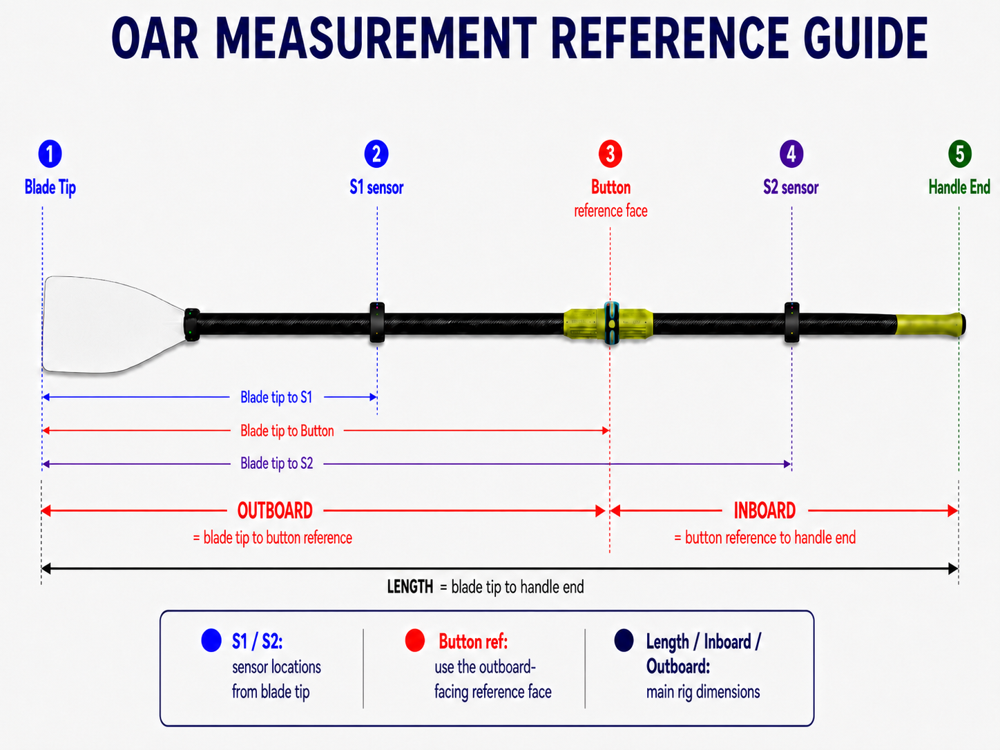

Oar dimensions and sensor positions
Record the geometry of the physical oar, even when you enter Moment/Bend Factor manually.
Edit the correct record
For the next workout, use Oar Settings → Active Oar details → Edit details. Choose the side, Sculling/Sweep type and model; check the stiffness source, dimensions and sensor positions. Editing a copy in Manage oars changes that managed record separately.
- Choose the displayed length unit and enter overall length, inboard and outboard.
- Measure S1 and S2 from the blade tip toward the handle.
- Check the shaft profile and any taper/diameter positions.
- Select measured Cperm or enter a suitable manual Cperm; alternatively choose a direct MBF override.
- Review the Moment/Bend Factor preview and source, then save.
If your editor offers a photo measurement tool, verify its estimates against physical measurements before saving.

Keep the references consistent
| Dimension | Measure |
|---|---|
| S1 and S2 | Blade tip to each sensor position. |
| Outboard | Blade tip to the outboard-facing button reference face. |
| Inboard | The same button reference face to the handle end. |
| Overall length | Blade tip to handle end; inboard + outboard. |
| Taper stations | Distance from blade tip and shaft diameter at that position. |
Use the units displayed by the editor. Stored/uploaded dimensions use meters. Sensor identities and physical positions are separate information: a Bluetooth name does not establish S1 or S2.
Dimensions still matter with an override
A direct MBF override bypasses Cperm and dimensions when calculating the factor. Inboard still converts moment into perpendicular handle-tip force. Geometry is also needed for supported oar/boat-motion calculations.
New recordings freeze the saved dimensions, sensor positions, calibration, manual inputs and applied values. They are sent with the workout and shown under Recorded oar settings during upload and re-analysis. Missing dimensions remain unknown.
Changing length, inboard/outboard or sensor positions on the same shaft usually means updating dimensions and recalculating MBF from its Cperm. Moving or rotating a mount also requires sensor alignment.